FAIL
2026-10-07 09:35:54 · позиций 50 · FAIL 35 · аномалий вне деталей 1 · невязка фидуциалов 0.0179944525356133 мм · ECC 0.9872
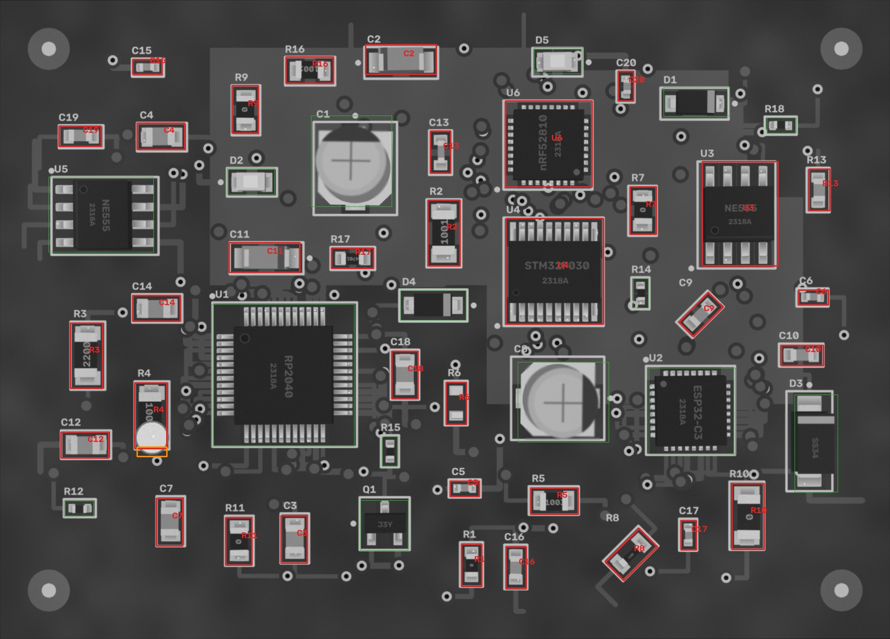
Кроп: живая плата (выровнена) | эталон (жёлтое — метка полярности,
синее — место метки при 180°) | карта отклонений σ.
MISSING — корпус не найден; MISMATCH — на месте не то, что в эталоне (голые площадки, другая деталь,
повреждение); POLARITY — развёрнута на 180° / метка не там; SHIFT / ROTATED — вне допуска;
ANOMALY — локальное отклонение от golden (мост, шарик, лишний припой, посторонний предмет).
| C10 100n · 0603 | FAIL MISMATCH | 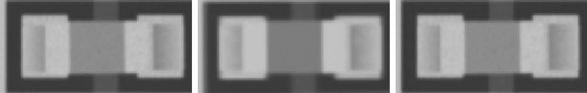 ncc 0.96 · ncc_thr 0.6 · mad 9.9 · mad_thr 8.0 · dx_mm 0.0 · dy_mm 0.023 · dtheta_deg -0.0 · anomaly_px 0 |
| C11 Tantalum_Case-A · Tantalum_Case-A | FAIL MISMATCH | 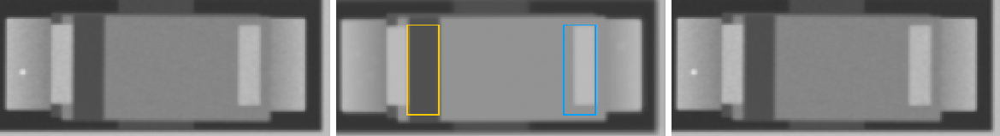 ncc 0.982 · ncc_thr 0.6 · ncc_180 0.513 · mad 10.4 · mad_thr 7.4 · mad_180 28.0 · dx_mm 0.0 · dy_mm 0.023 · dtheta_deg -0.0 · anomaly_px 0 |
| C12 22p · 0805 | FAIL MISMATCH | 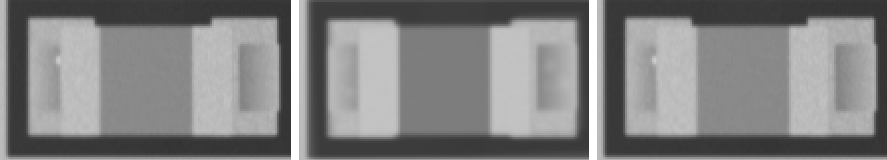 ncc 0.966 · ncc_thr 0.6 · mad 9.5 · mad_thr 7.9 · dx_mm 0.023 · dy_mm 0.023 · dtheta_deg -0.0 · anomaly_px 0 |
| C13 10u · 0603 | FAIL MISMATCH | 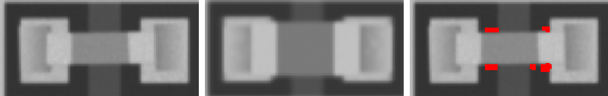 ncc 0.764 · ncc_thr 0.6 · mad 24.2 · mad_thr 7.9 · dx_mm -0.023 · dy_mm -0.023 · dtheta_deg -0.0 · anomaly_px 0 |
| C14 22p · 0805 | FAIL MISMATCH | 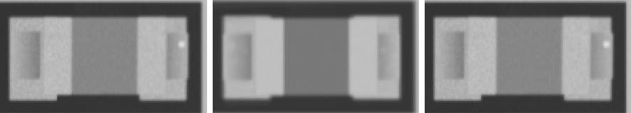 ncc 0.962 · ncc_thr 0.6 · mad 10.2 · mad_thr 7.8 · dx_mm 0.023 · dy_mm -0.023 · dtheta_deg -0.0 · anomaly_px 0 |
| C15 10u · 0402 | FAIL MISMATCH | 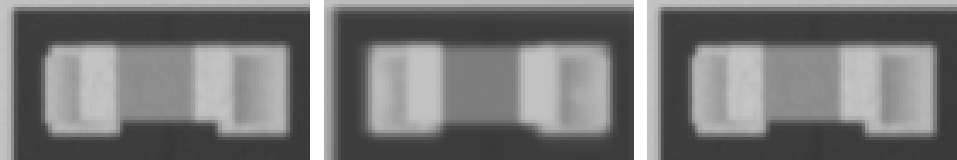 ncc 0.967 · ncc_thr 0.6 · mad 11.0 · mad_thr 9.2 · dx_mm -0.023 · dy_mm 0.0 · dtheta_deg -0.0 · anomaly_px 0 |
| C16 10u · 0603 | FAIL MISMATCH | 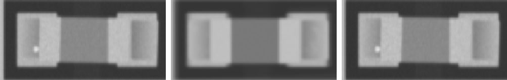 ncc 0.967 · ncc_thr 0.6 · mad 10.4 · mad_thr 8.3 · dx_mm 0.0 · dy_mm 0.0 · dtheta_deg -0.0 · anomaly_px 0 |
| C17 100n · 0402 | FAIL MISMATCH | 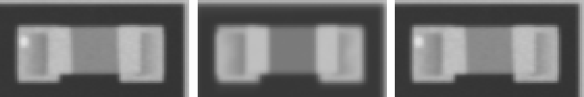 ncc 0.976 · ncc_thr 0.6 · mad 10.0 · mad_thr 8.7 · dx_mm 0.023 · dy_mm 0.0 · dtheta_deg -0.0 · anomaly_px 0 |
| C18 10n · 0805 | FAIL MISMATCH | 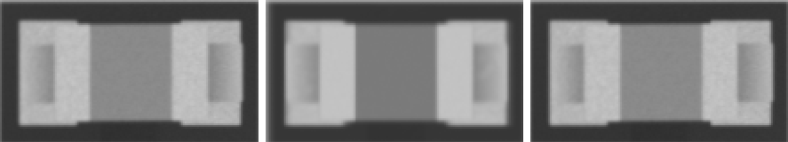 ncc 0.976 · ncc_thr 0.6 · mad 10.5 · mad_thr 7.8 · dx_mm 0.023 · dy_mm 0.0 · dtheta_deg -0.0 · anomaly_px 0 |
| C19 10u · 0603 | FAIL MISMATCH | 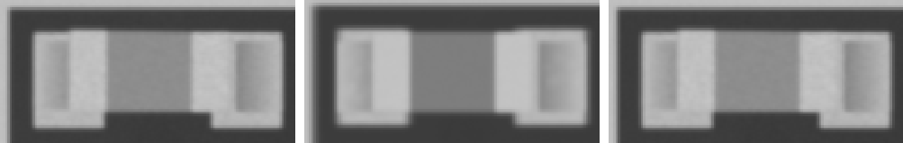 ncc 0.967 · ncc_thr 0.6 · mad 10.1 · mad_thr 7.6 · dx_mm 0.0 · dy_mm -0.023 · dtheta_deg -0.0 · anomaly_px 0 |
| C2 Tantalum_Case-A · Tantalum_Case-A | FAIL MISMATCH | 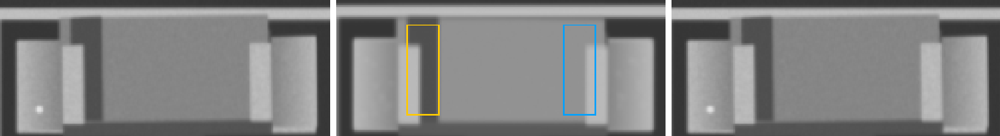 ncc 0.946 · ncc_thr 0.6 · ncc_180 0.512 · mad 10.4 · mad_thr 7.4 · mad_180 32.3 · dx_mm 0.023 · dy_mm -0.047 · dtheta_deg -0.0 · anomaly_px 0 |
| C20 10u · 0402 | FAIL MISMATCH | 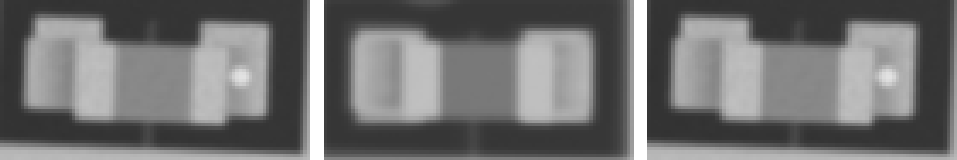 ncc 0.912 · ncc_thr 0.6 · mad 10.4 · mad_thr 9.1 · dx_mm 0.0 · dy_mm 0.07 · dtheta_deg 2 · anomaly_px 0 |
| C3 100n · 0805 | FAIL MISMATCH | 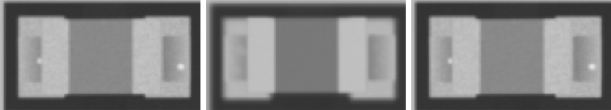 ncc 0.961 · ncc_thr 0.6 · mad 10.4 · mad_thr 7.8 · dx_mm 0.0 · dy_mm 0.023 · dtheta_deg -0.0 · anomaly_px 0 |
| C4 4u7 · 0805 | FAIL MISMATCH | 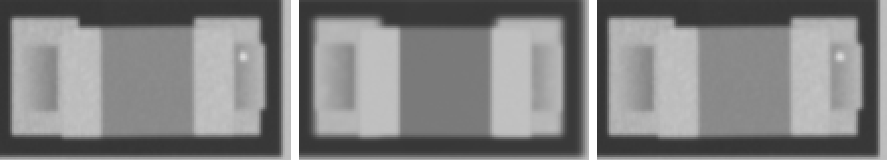 ncc 0.969 · ncc_thr 0.6 · mad 10.2 · mad_thr 7.5 · dx_mm 0.047 · dy_mm 0.0 · dtheta_deg -0.0 · anomaly_px 0 |
| C5 22p · 0402 | FAIL MISMATCH | 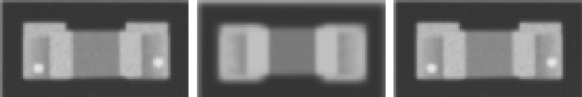 ncc 0.926 · ncc_thr 0.6 · mad 10.6 · mad_thr 9.3 · dx_mm 0.0 · dy_mm 0.023 · dtheta_deg -0.0 · anomaly_px 0 |
| C6 22p · 0402 | FAIL MISMATCH | 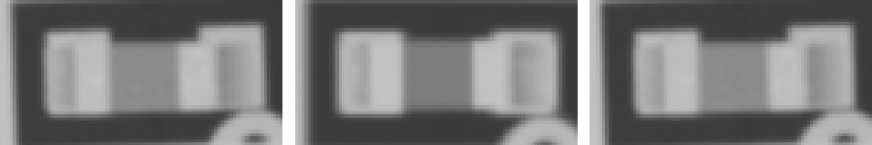 ncc 0.955 · ncc_thr 0.6 · mad 9.4 · mad_thr 9.0 · dx_mm -0.023 · dy_mm 0.023 · dtheta_deg -2 · anomaly_px 0 |
| C7 22p · 0805 | FAIL MISMATCH | 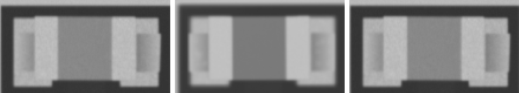 ncc 0.968 · ncc_thr 0.6 · mad 9.9 · mad_thr 7.9 · dx_mm 0.047 · dy_mm -0.023 · dtheta_deg -0.0 · anomaly_px 0 |
| C9 10u · 0603 | FAIL MISMATCH | 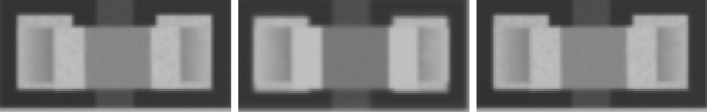 ncc 0.953 · ncc_thr 0.6 · mad 10.3 · mad_thr 7.9 · dx_mm -0.023 · dy_mm 0.023 · dtheta_deg -0.0 · anomaly_px 0 |
| R1 0R · 0603 | FAIL MISMATCH | 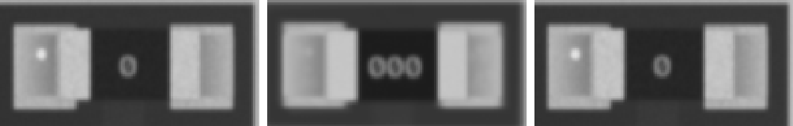 ncc 0.974 · ncc_thr 0.6 · mad 11.1 · mad_thr 10.5 · dx_mm 0.023 · dy_mm -0.023 · dtheta_deg -0.0 · anomaly_px 0 |
| R10 0R · 1206 | FAIL MISMATCH | 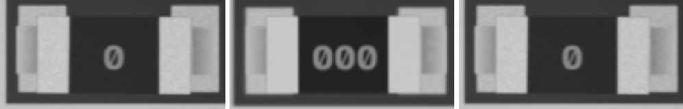 ncc 0.963 · ncc_thr 0.6 · mad 12.9 · mad_thr 8.7 · dx_mm -0.047 · dy_mm 0.047 · dtheta_deg -0.0 · anomaly_px 0 |
| R11 0R · 0805 | FAIL MISMATCH | 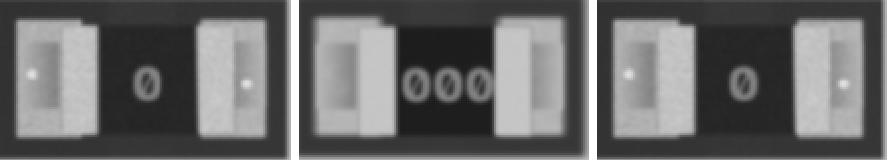 ncc 0.954 · ncc_thr 0.6 · mad 15.1 · mad_thr 10.3 · dx_mm 0.0 · dy_mm -0.023 · dtheta_deg -0.0 · anomaly_px 0 |
| R13 100k · 0603 | FAIL MISMATCH | 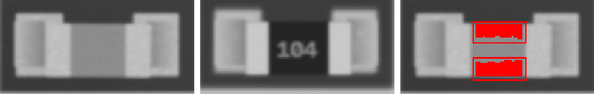 ncc 0.712 · ncc_thr 0.6 · mad 62.2 · mad_thr 8.9 · dx_mm -0.023 · dy_mm -0.047 · dtheta_deg -0.0 · anomaly_px 589 |
| R16 1k · 0805 | FAIL MISMATCH | 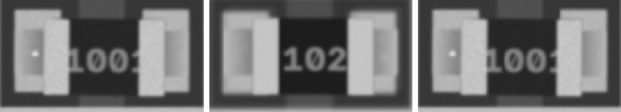 ncc 0.955 · ncc_thr 0.6 · mad 14.9 · mad_thr 12.2 · dx_mm -0.023 · dy_mm 0.023 · dtheta_deg -0.0 · anomaly_px 0 |
| R17 4k7 · 0603 | FAIL MISMATCH | 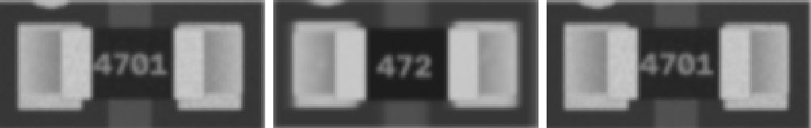 ncc 0.964 · ncc_thr 0.6 · mad 14.8 · mad_thr 10.2 · dx_mm 0.023 · dy_mm -0.023 · dtheta_deg -0.0 · anomaly_px 0 |
| R2 1k · 1206 | FAIL MISMATCH | 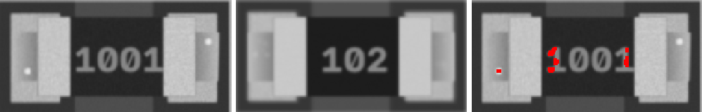 ncc 0.948 · ncc_thr 0.6 · mad 16.4 · mad_thr 8.6 · dx_mm 0.023 · dy_mm -0.023 · dtheta_deg -0.0 · anomaly_px 0 |
| R3 220 · 1206 | FAIL MISMATCH | 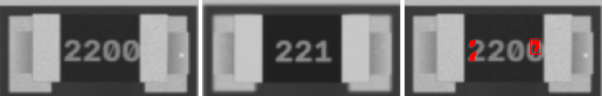 ncc 0.946 · ncc_thr 0.6 · mad 16.7 · mad_thr 9.3 · dx_mm 0.047 · dy_mm -0.023 · dtheta_deg -0.0 · anomaly_px 58 |
| R4 10k · 1206 | FAIL MISMATCH | 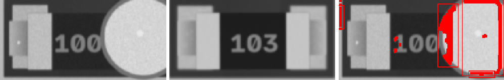 ncc 0.787 · ncc_thr 0.6 · mad 34.7 · mad_thr 9.1 · dx_mm -0.116 · dy_mm 0.023 · dtheta_deg -0.0 · anomaly_px 1490 |
| R5 100k · 0805 | FAIL MISMATCH | 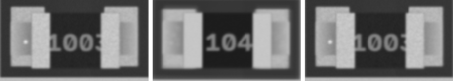 ncc 0.949 · ncc_thr 0.6 · mad 16.4 · mad_thr 10.5 · dx_mm -0.023 · dy_mm 0.047 · dtheta_deg -0.0 · anomaly_px 0 |
| R6 4k7 · 0603 | FAIL MISMATCH | 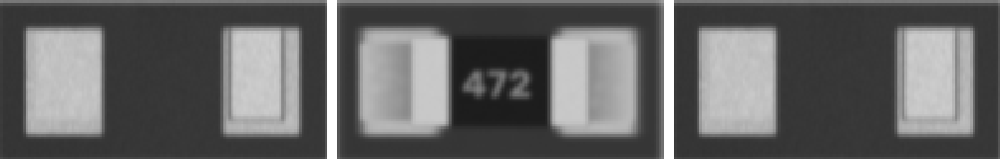 ncc 0.813 · ncc_thr 0.6 · mad 34.8 · mad_thr 10.1 · dx_mm 0.0 · dy_mm 0.0 · dtheta_deg -0.0 · anomaly_px 0 |
| R7 0R · 0805 | FAIL MISMATCH | 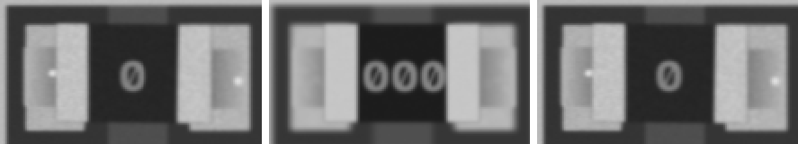 ncc 0.953 · ncc_thr 0.6 · mad 15.8 · mad_thr 9.2 · dx_mm -0.047 · dy_mm 0.0 · dtheta_deg -0.0 · anomaly_px 0 |
| R8 220 · 0805 | FAIL MISMATCH | 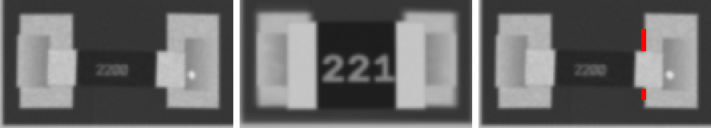 ncc 0.874 · ncc_thr 0.6 · mad 27.9 · mad_thr 9.6 · dx_mm -0.023 · dy_mm -0.023 · dtheta_deg -0.0 · anomaly_px 0 |
| R9 0R · 0805 | FAIL MISMATCH | 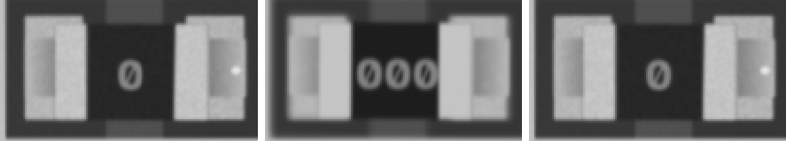 ncc 0.955 · ncc_thr 0.6 · mad 14.4 · mad_thr 9.9 · dx_mm 0.0 · dy_mm 0.0 · dtheta_deg -0.0 · anomaly_px 0 |
| U3 NE555 · SOIC-8 | FAIL MISMATCH | 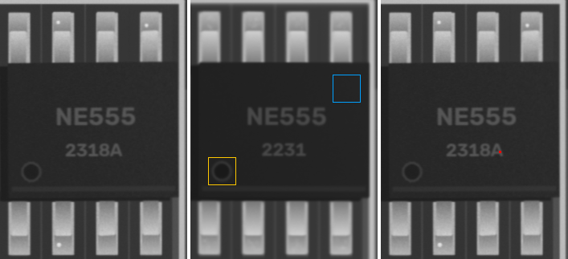 ncc 0.968 · ncc_thr 0.6 · ncc_180 0.852 · mad 7.4 · mad_thr 7.2 · mad_180 8.7 · dx_mm 0.0 · dy_mm -0.023 · dtheta_deg -0.0 · anomaly_px 0 |
| U4 STM32F030 · TSSOP-20 | FAIL MISMATCH | 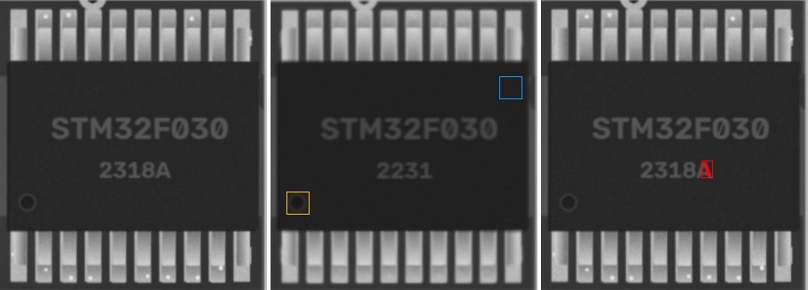 ncc 0.924 · ncc_thr 0.6 · ncc_180 0.75 · mad 7.7 · mad_thr 7.6 · mad_180 10.4 · dx_mm 0.023 · dy_mm 0.023 · dtheta_deg -0.0 · anomaly_px 57 |
| U6 nRF52810 · QFN-32 | FAIL MISMATCH | 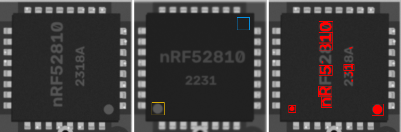 ncc 0.829 · ncc_thr 0.6 · ncc_180 0.762 · mad 11.1 · mad_thr 7.2 · mad_180 11.2 · dx_mm 0.023 · dy_mm 0.0 · dtheta_deg -0.0 · anomaly_px 1630 |
| C1 47u · CP_Elec_5x5.8 | PASS | ncc 0.99 · ncc_thr 0.6 · ncc_180 0.527 · mad 2.4 · mad_thr 7.7 · mad_180 28.4 · mark_ncc 0.947 · mark_ncc_180 -0.446 · dx_mm -0.023 · dy_mm 0.0 · dtheta_deg -0.0 · anomaly_px 0 |
| C8 47u · CP_Elec_5x5.8 | PASS | ncc 0.985 · ncc_thr 0.6 · ncc_180 0.521 · mad 4.1 · mad_thr 7.9 · mad_180 29.8 · mark_ncc 0.965 · mark_ncc_180 -0.521 · dx_mm 0.0 · dy_mm -0.023 · dtheta_deg -0.0 · anomaly_px 0 |
| D1 SOD-123 · SOD-123 | PASS | ncc 0.993 · ncc_thr 0.6 · ncc_180 0.842 · mad 6.4 · mad_thr 7.2 · mad_180 13.0 · mark_ncc 0.932 · mark_ncc_180 0.074 · dx_mm -0.023 · dy_mm 0.0 · dtheta_deg -0.0 · anomaly_px 0 |
| D2 LED_0805 · LED_0805 | PASS | ncc 0.99 · ncc_thr 0.6 · ncc_180 0.873 · mad 5.5 · mad_thr 7.4 · mad_180 5.7 · mark_ncc 0.0 · mark_ncc_180 -0.105 · dx_mm 0.0 · dy_mm 0.0 · dtheta_deg -0.0 · anomaly_px 0 |
| D3 SMA · SMA | PASS | ncc 0.995 · ncc_thr 0.6 · ncc_180 0.728 · mad 6.0 · mad_thr 7.5 · mad_180 24.6 · mark_ncc 0.956 · mark_ncc_180 -0.014 · dx_mm 0.0 · dy_mm 0.0 · dtheta_deg -0.0 · anomaly_px 0 |
| D4 SOD-123 · SOD-123 | PASS | ncc 0.997 · ncc_thr 0.6 · ncc_180 0.836 · mad 6.0 · mad_thr 7.2 · mad_180 13.3 · mark_ncc 0.947 · mark_ncc_180 -0.087 · dx_mm 0.023 · dy_mm 0.023 · dtheta_deg -0.0 · anomaly_px 0 |
| D5 LED_0805 · LED_0805 | PASS | ncc 0.98 · ncc_thr 0.6 · ncc_180 0.837 · mad 4.8 · mad_thr 7.6 · mad_180 5.1 · mark_ncc 0.025 · mark_ncc_180 0.016 · dx_mm 0.047 · dy_mm -0.023 · dtheta_deg -0.0 · anomaly_px 0 |
| Q1 J3Y · SOT-23 | PASS | ncc 0.973 · ncc_thr 0.6 · ncc_180 0.566 · mad 7.4 · mad_thr 7.6 · mad_180 35.8 · dx_mm 0.023 · dy_mm -0.07 · dtheta_deg -0.0 · anomaly_px 0 |
| R12 0R · 0402 | PASS | ncc 0.983 · ncc_thr 0.6 · mad 7.6 · mad_thr 10.2 · dx_mm 0.047 · dy_mm 0.023 · dtheta_deg -0.0 · anomaly_px 0 |
| R14 220 · 0402 | PASS | ncc 0.993 · ncc_thr 0.6 · mad 7.5 · mad_thr 11.4 · dx_mm 0.023 · dy_mm 0.0 · dtheta_deg -0.0 · anomaly_px 0 |
| R15 10k · 0402 | PASS | ncc 0.988 · ncc_thr 0.6 · mad 7.8 · mad_thr 9.6 · dx_mm 0.0 · dy_mm 0.0 · dtheta_deg -0.0 · anomaly_px 0 |
| R18 4k7 · 0402 | PASS | ncc 0.987 · ncc_thr 0.6 · mad 8.6 · mad_thr 9.6 · dx_mm -0.023 · dy_mm -0.023 · dtheta_deg -0.0 · anomaly_px 0 |
| U1 RP2040 · LQFP-48 | PASS | ncc 0.935 · ncc_thr 0.6 · ncc_180 0.683 · mad 5.9 · mad_thr 7.1 · mad_180 7.5 · mark_ncc 0.905 · mark_ncc_180 -0.155 · dx_mm 0.023 · dy_mm 0.023 · dtheta_deg -0.0 · anomaly_px 0 |
| U2 ESP32-C3 · QFN-32 | PASS | ncc 0.94 · ncc_thr 0.6 · ncc_180 0.771 · mad 7.1 · mad_thr 7.3 · mad_180 9.8 · mark_ncc 0.886 · mark_ncc_180 -0.029 · dx_mm 0.0 · dy_mm 0.023 · dtheta_deg -0.0 · anomaly_px 0 |
| U5 NE555 · SOIC-8 | PASS | ncc 0.937 · ncc_thr 0.6 · ncc_180 0.557 · mad 6.8 · mad_thr 7.2 · mad_180 9.4 · mark_ncc 0.983 · mark_ncc_180 0.057 · dx_mm -0.023 · dy_mm 0.047 · dtheta_deg -0.0 · anomaly_px 0 |